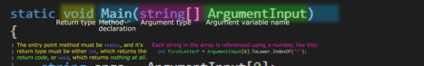

В компьютерном программировании точка входа - это место в программе, где начинается выполнение программы и где программа имеет доступ к аргументам командной строки.
Чтобы запустить выполнение программы,
загрузчик или операционная система передает управление своей
точке входа. (Во время загрузки программой является сама
операционная система). Это означает переход от времени загрузки
к времени выполнения.
В простых системах выполнение начинается с первого оператора,
что является обычным явлением в
интерпретируемых языках, простых исполняемых
форматах и загрузчиках. В
других случаях точка входа находится по какому-либо другому
известному адресу памяти, который может
быть абсолютным адресом или относительным адресом (смещением).
Альтернативно, выполнение программы может начинаться с
именованной точки, либо с обычного имени, определенного языком
программирования или операционной системой, либо с имени,
указанного вызывающим абонентом. Во
многих языках семейства C это функция с именем main;
в результате точка входа часто известна как основная функция.
В языках JVM, таких как Java, точкой входа является статический
метод с именем main; в языках CLI, таких как C #, точкой входа
является статический метод с именем Main.
